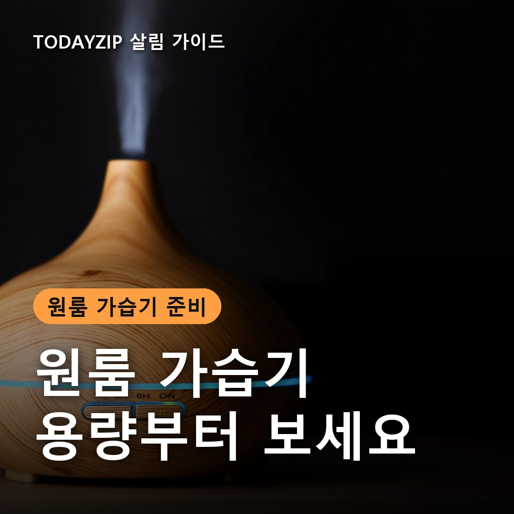
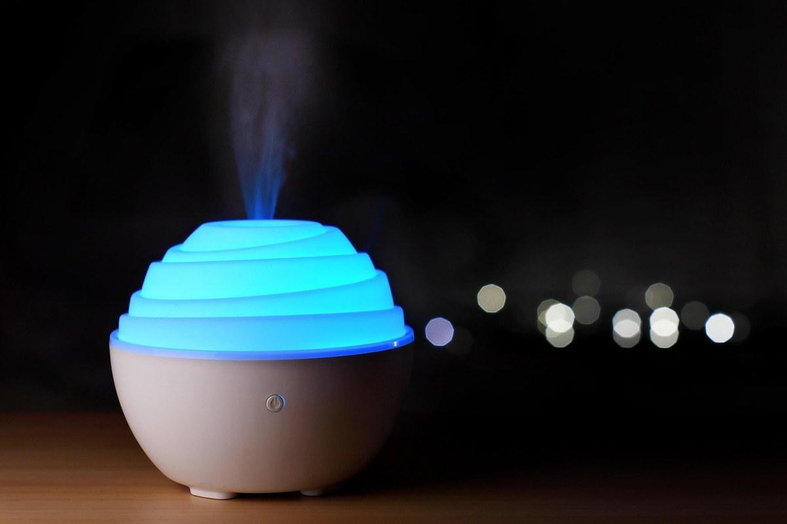
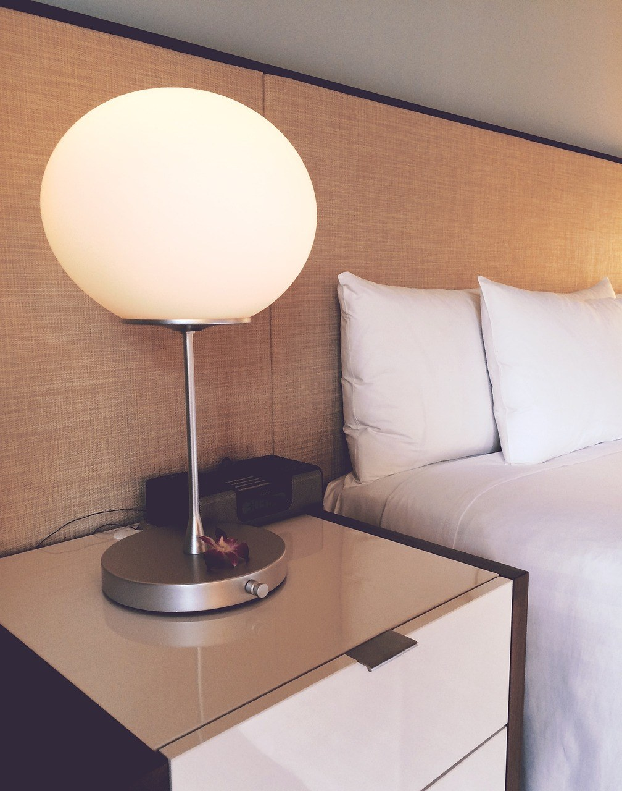
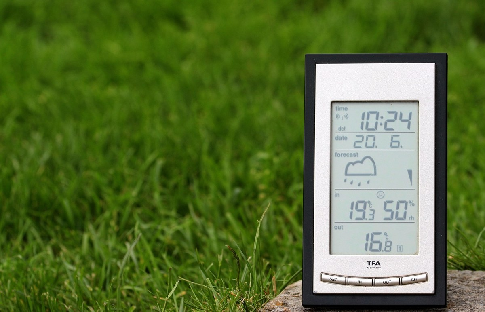

이 포스팅은 쿠팡 파트너스 활동의 일환으로, 이에 따른 일정액의 수수료를 제공받습니다.
[사진 1: 썸네일]
자고 일어나면 목이 칼칼하고, 빨래는 하룻밤 만에 바싹 마르나요? 난방을 켜면 좁은 원룸일수록 공기가 금방 건조해져요. 막상 가습기를 사려고 보면 방식도 용량 표시도 제각각이라 헷갈려요.
원룸 가습기 용량 고르는 법은 생각보다 단순해요. 방 크기에 맞는 가습량, 하룻밤 버티는 물통 크기, 그리고 우리 집 생활에 맞는 방식만 정하면 돼요. 오늘은 이 세 가지를 순서대로 정리해 드릴게요.
[사진 2]
📷 [직접 찍은 사진 넣기: 방에 놓인 습도계 숫자 또는 가습기 둘 자리 사진]
가습기 용량은 두 가지 숫자로 나뉘어요. 한 시간에 내보내는 물의 양인 가습량(mL/h)과 물을 담는 물통 크기(L)예요. 가습량이 방에 비해 너무 작으면 켜 둬도 습도가 잘 오르지 않고, 너무 크면 좁은 원룸에서는 창문에 결로가 생기기 쉬워요.
한국소비자원이 2025년에 가습기 13개 제품을 시험했을 때도 제품마다 가습량 차이가 컸어요. 디자인보다 가습량과 적용 면적부터 확인하세요.
✍️ [내 경험 한두 줄: 겨울에 우리 집 방 습도는 보통 몇 % 정도인가요? (습도계가 없다면 건조함을 느끼는 때)]
방식에 따라 전기 사용, 관리법, 안전 포인트가 달라요. 아래는 일반적인 특징이라 같은 방식이라도 제품마다 차이가 있어요.
| 구분 | 가열식 | 기화식 | 초음파식 |
|---|---|---|---|
| 원리 | 물을 끓여 수증기로 | 젖은 필터에 바람을 통과 | 진동으로 물을 잘게 쪼갬 |
| 가습 속도 | 빠른 편 | 느린 편 | 빠른 편 |
| 전기 사용 | 많은 편 | 적은 편 | 적은 편 |
| 관리 | 물때(석회) 제거 | 필터 세척·교체 | 물통·진동판 자주 세척 |
| 주의점 | 뜨거운 증기·화상 | 필터 교체 비용 | 세척 소홀하면 위생 문제 |
상세페이지에는 보통 가습량과 함께 적용 면적(㎡ 또는 평)이 적혀 있어요. 실제 방 면적이 그 안에 들어가는지부터 보세요. 잠잘 때만 쓴다면 하룻밤 버티는 물통 크기가 더 중요해요.
[사진 3]
📷 [직접 찍은 사진 넣기: 가습기를 둘 자리(협탁·책상 위)와 벽·커튼과의 거리]
전기요금이 신경 쓰이고 조용한 게 좋다면 기화식이 잘 맞아요. 대신 교체 필터 가격도 같이 보세요. 빠르게 습도를 올리고 싶다면 가열식을 볼 수 있지만, 전기를 많이 쓰는 편이라 사용 시간을 정해 두세요.
초음파식은 가격 부담이 적고 조용해 원룸에서 많이 쓰여요. 다만 물을 그대로 내보내는 방식이라 물통을 매일 비우고 자주 씻을 수 있을 때 고르세요.
✍️ [내 경험 한두 줄: 가습기를 주로 언제 켤 것 같나요? (잠잘 때/재택근무 중/하루 종일)]
[사진 4]
물통의 물은 하루 지나면 버리고 새 물을 채우세요. 세척은 제품 설명서에 적힌 방법을 따르고, 가습기 물통에 살균제나 세제를 넣어 쓰지 마세요.
습도는 보통 40~60%를 기준으로 많이 이야기해요. 습도계를 보고 너무 높으면 끄면 창문 결로도 줄일 수 있어요.
Q. 원룸에 큰 가습기를 사면 더 좋지 않나요?
A. 가습량이 방에 비해 너무 크면 습도가 지나치게 올라 결로가 생기기 쉬워요. 적용 면적에 맞추고 습도 설정 기능을 쓰세요.
Q. 잠잘 때 켜 두려면 물통은 어느 정도가 좋나요?
A. 가습량(mL/h)에 잠자는 시간을 곱한 양보다 물통이 크면 밤새 끊기지 않아요. 예를 들어 시간당 200mL로 8시간이면 1.6L 이상이에요.
Q. 수돗물과 정수기 물 중 뭘 넣어야 하나요?
A. 방식마다 권장하는 물이 달라요. 설명서에 적힌 물을 쓰세요.
정리하면, 원룸 가습기 용량은 적용 면적과 하룻밤 버티는 물통 크기로 정하고, 전기요금이 걱정이면 기화식, 빠른 가습이면 가열식, 가격과 소음이면 초음파식을 보면 돼요. 어떤 방식이든 매일 물 갈기와 세척이 제일 중요해요.
여러분은 원룸에서 가습기를 어디에 두시나요? 건조함 줄이는 방법이 있다면 댓글로 나눠 주세요.
인스타그램 @todayzip.info 에서 살림 꿀팁을 30초 영상으로도 볼 수 있어요.
이 포스팅은 쿠팡 파트너스 활동의 일환으로, 이에 따른 일정액의 수수료를 제공받습니다.